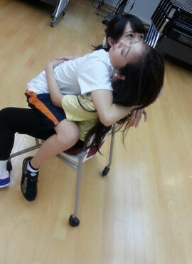
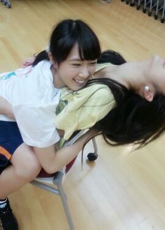

| 2014/09 16 Tue | 同じ写真を載せてみます。笑 まひろ |
こんにちわ\♪/
歌いたくて歌いたくて カラオケに行くのを我慢できなった Rottyです 。
あの、、、
blogに貼ろうと思ってたこの写真たちが、、、、

はっ !!!

やばいっ(;゜∇゜)
先に らりんのblogにあがってたーーー(*≧∀≦*)わら
しかも この3枚はOKやけど、
私の顔 ぶれぶれで悲惨なのと 白目になってる写真まで載せやがったーーー\(#^.^#)/わら
こらーーーー !!!!
らりん今度 100円のジュースおごってな
 ？
？
でも らりんが最後にええこと書いてくれてたから許す。笑
私も らりんと居たら落ち着くよ〜..*
自分 メンバーからモテモテやわぁ〜笑
「 ホテルの部屋割りろってぃーとがいい〜」って言ってくれるメンバーよう居るんよなぁ〜、、 やっぱモテモテやわぁ〜。
←(゜゜;)＼(--;) バシッ!!!!!
( 自分で言うなボケなすび。)
ばいばい 笑 。
コメント(258)
2014/09/16 16:06